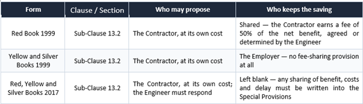

FIDIC Contracting Expertise

Avoiding contract disputes before they arise
We work with and advise our clients on the use of the FIDIC suite of contracts for energy and infrastructure projects.
At energy-i our approach is unique, as our focus is on avoiding contract disputes, to avoid long and costly claims and dispute processes for all parties.
FIDIC – what is it?
What Is FIDIC?
FIDIC contracts, developed by the International Federation of Consulting Engineers in French Fédération Internationale des Ingénieurs Conseils or FIDIC
FIDIC contract templates are a cornerstone of international construction projects. These contracts are designed for clarity in roles, responsibilities, and risk allocation.
FIDIC’s robust and comprehensive framework has made it a staple for large-scale, complex projects. However, its traditional and often rigid approach may not suit all project types, especially those requiring greater adaptability.
FIDIC and ICE and NEC
FIDIC (Fédération Internationale des Ingénieurs-Conseils) contracts have been the go-to choice for many professionals, particularly for international projects. However, NEC (New Engineering Contract) is increasingly being recognized as a modern, flexible alternative that addresses the dynamic needs of contemporary project delivery.
FIDIC Rainbow Suite - Which one is used where?
The FIDIC suite includes several widely recognized model form contract templates called “books” . Each has been developed for specific project types and requirements:
There are 4 main contract templates or books
1. Red Book (Conditions of Contract for Construction): For projects where the employer provides the design, making it suitable for traditional construction contracts.
2. Yellow Book (Conditions of Contract for Plant and Design-Build): For projects where the contractor is responsible for both design and construction.
3. Silver Book (Conditions of Contract for EPC/Turnkey Projects): For engineering, procurement, and construction projects, where the contractor assumes a high degree of risk and minimal employer involvement.
4. Green Book (Short Form of Contract): A simplified contract for smaller projects or less complex works.
Green Book would have some
claim to be regarded as
part of the Rainbow Suite, since it was issued in 1999.
FIDIC states it is 'for
engineering and building works of
relatively small capital value', or for contracts of greater value
requiring 'fairly simple or repetitive work or work of short
duration'.[1] It is
suggested that 'USD 500,000 and 6 months
should be regarded as reasonable limits on the capital value
and duration respectively
There are 4 ancillary or supporting model form contract templates
5. Gold Book (Conditions of Contract for Design, Build, and Operate): For projects that combine the design, construction, and operation phases into a single contractual arrangement.
, the Gold Book resembles a
design-build
contract, which is heavily based on the Yellow Book, with
an agreement attached for operation and maintenance
during the 20-year Operation Service Period.
6. Blue Book (Dredging and Reclamation Contract): Designed for dredging and reclamation works, as well as ancillary construction projects.
The FIDIC Dredging Contract[2] is
sometimes known as
the Blue Book or Blue-Green Book, though neither name
has achieved the wide currency of the Rainbow Suite
contracts. It is often excluded altogether from consideration
by commentators on the FIDIC forms of contract. This
is an unfortunate omission. Prepared in conjunction with
the International Association of Dredging Companies, the
Dredging Contract has been extensively used for coastal and
marine works of all kinds, including ports and harbours. It is
well known in the Middle East and benefits from an absence
of competitors in a highly specialised sector. It bears some
resemblance to the Short Form of Contract (see below)
in being a straightforward, simplified contract, which can
be executed on a design-build basis or with a significant
Employer design element
7. White Book (Client/Consultant Model Services Agreement): Used for agreements between clients and consultants, such as architects or engineers.
FIDIC contracts consultancy
agreements. They differ from the Rainbow Suite contracts
and the other standard forms above in that they are not
construction contracts and do not involve the contractor.
Most significant of these by far is the White Book. First
published in 1990, the White Book is
probably the most
important agreement for professional services in construction
globally. The contract is between the 'purchaser' of the
services: 'Client' rather than 'Employer', and the 'supplier' of
the services: 'Consultant' rather than 'Contractor'.
FIDIC's intention was to produce an
agreement for 'general
use for the purposes of pre-investment and feasibility
studies, detail design and administration of construction
and project management, both for Employer-led design
teams and for Contractor-led design teams on design
and build commissions'.[3]
A feature of the 2006 (and previous
editions) of the White
Book was the very limited provision concerning the rights
and obligations of the Parties. The basic Consultant's duty of
care was stated to be 'no other responsibility than to exercise
reasonable skill, care and diligence in the performance of his
obligations under the Agreement'.[4] This was
consistent with
the English law concept of the basic duty of the supplier of a
service.[5] An attempt
has been made in the 2017 fifth edition
to make this more flexible, by providing that the 'Consultant
shall perform the Services with a view to satisfying any
function and purpose that may be described in Appendix I
[Scope of Services]'.[6] But this
is still said to be only to the
extent achievable using reasonable care and skill, so would
constitute a problem in the provision of design services, for
example, for a design-and-build contractor required to give a
fitness-for-purpose undertaking to the employer for design.
8. Pink Book (MDB Harmonized Edition): A version of the Red Book adapted for Multilateral Development Bank-financed projects.
The Pink Book[7] represents
a formalisation of the amendments
to the Red Book that had been developed by Multilateral
Development Banks (MDBs) for use in aid-funded projects.
The FIDIC Red Book was used
widely, over many years, on
development projects funded by banks as part of mandatory
bidding documents to which borrowers had to adhere.
The purpose was to 'simplify the use of the FIDIC Conditions
of Contract not only for the MDBs and their borrowers but
also for others involved with project procurement including
engineers, contractors, and contract specialists. It is intended
for use on MDB financed projects only
Sub-contracting under FIDIC
Conditions for Subcontract for Construction for Building and Engineering Works Designed by the Employer, 2011.
Role of the Engineer
The article examines the significance of the consulting engineer within the risk management system in the implementation of construction projects based on FIDIC contracts. It is established that within a risk-oriented management model, this participant performs not only the tasks of technical supervision and contract administration, but also contributes to the prevention of adverse events, the allocation of responsibilities between the parties, and the procedural resolution of emerging disagreements. Using examples of infrastructure projects, it is shown that the effectiveness of such participation depends both on the chosen contractual framework and on the degree of formalization of project procedures. The paper analyzes the powers of the consulting engineer and highlights the importance of their involvement in coordinating changes, documenting contract-relevant circumstances, and reducing the likelihood of disputes.,
Fidic Sliver Book
Traditional FIDIC forms (like the Red Book) relied on shared risk and an independent engineer acting as a fair mediator. However, during the 1990s boom in private infrastructure and independent power projects (IPP), private lenders and project financiers refused to back ventures with open-ended cost overruns or schedule delays. The Silver Book was engineered specifically to transfer underground, weather, and design coordination risks to a single-point contractor in exchange for a fixed lump-sum price. [1, 2, 3, 4]
The Silver Book was introduced in 1999 to meet the needs of the project finance market, where lenders demand a high degree of certainty on cost and time. It is a "turnkey" contract, meaning the Contractor bears the vast majority of the risks.
Key Features
- Maximum Risk Transfer: In theory The Contractor takes on almost all risks related to design, construction, and project completion for a fixed price.
- Turnkey Delivery: The Contractor hands over a fully operational facility to the Employer.
- Limited Employer Role: The role of the Engineer is removed, and the Employer's direct involvement is minimized.
When to Use It
Best suited for major privately-financed projects like power plants or industrial facilities where the Employer is less of a technical expert and prioritizes cost and time certainty above all else.
The FIDIC Silver Book—formally titled the Conditions of Contract for EPC/Turnkey Projects—was first published in 1999 by the International Federation of Consulting Engineers (FIDIC) to satisfy the growing project finance market's demand for strict cost and time certainty. [1, 2, 3]
Chronological Evolution of the Silver Book
- 1998 Test Edition: FIDIC released an initial test edition (the "Silver Book" due to its cover colour) to gather international feedback from contractors, developers, and legal experts. [1]
- 1999 First Edition: Following industry review, the official First Edition was launched as part of the broader "Rainbow Suite" (alongside updated Red and Yellow Books). It marked a major departure from traditional models by placing almost total design, site, and financial risk on the contractor. [1, 2, 3]
- 2017 Second Edition: FIDIC published an updated Second Edition to enhance clarity, introduce equal claim mechanisms for both parties, formalize quality management procedures, and transition the Dispute Adjudication Board into the Dispute Avoidance/Adjudication Board (DAAB). [1, 2]
Core Purpose and Market Driver
Traditional FIDIC forms (like the Red Book) relied on shared risk and an independent engineer acting as a fair mediator. However, during the 1990s boom in private infrastructure and independent power projects (IPP), private lenders and project financiers refused to back ventures with open-ended cost overruns or schedule delays. The Silver Book was engineered specifically to transfer underground, weather, and design coordination risks to a single-point contractor in exchange for a fixed lump-sum price
The Real-World Gas Turbine OEM Strategy using FIDIC
During contract negotiations, contractors heavily push back against standard FIDIC Silver Book terms because the default framework transfers almost all project risk to them. Because an unamended Silver Book can expose an EPC contractor to catastrophic financial losses, legal and commercial teams typically target several core clauses for heavy modification
"Employer’s Requirements" (Sub-Clause 5.1)
Unforeseen Subsurface and Ground Conditions (Sub-Clause 4.12)
Absolute "Fitness for Purpose" Guarantees (Sub-Clause 4.1)
Lack of an Independent Engineer in Silver Book
- The Standard Term: The Silver Book removes the traditional, independent "Engineer" role. Instead, the contract is administered directly by an Employer’s Representative, meaning the employer serves as both a party to the contract and its initial judge.
- The Pushback: Contractors push back on the strict 14-day or 28-day notice windows for claims, knowing an employer's representative is structurally incentivized to reject them. They will negotiate to give the Dispute Avoidance/Adjudication Board (DAAB) more immediate, binding authority to resolve mid-project disputes before the employer can act unilaterally. [1, 2, 3, 4, 5]
|
Silver Book Default |
Typical Contractor Amendment |
|
Contractor carries all design data risk. |
Employer remains liable for un-verifiable baseline data. |
|
Contractor absorbs all ground risk. |
Insert Yellow Book Sub-Clause 4.12 (Unforeseeable Physical Conditions). |
|
Absolute fitness for purpose. |
Tied strictly to PI insurance policy limits. |
|
Gross negligence bypasses liability caps. |
Remove gross negligence or tightly define it contractually. |
When GE or Siemens bid on a massive power plant project, they rarely accept unamended Silver Book terms because the financial risks of civil construction (e.g., ground conditions, local labor disputes) are outside their core manufacturing expertise. Instead, they apply two main strategies: [1]
1. The Consortium Wrapper (Silver Book): An OEM partners with a major civil engineering firm to form a consortium. The consortium jointly signs a Silver Book contract with the client, but internally partitions the risk so the civil contractor carries the site risk and the OEM only carries the equipment risk.
The Disaggregated Model (Yellow Book): The project owner hires a separate civil contractor under a FIDIC Red Book (Construction), while contracting directly with GE or Siemens under a FIDIC Yellow Book to design, manufacture, and deliver the gas turbine plant
Value Engineering
What value engineering actually is
Value engineering process bears a reputation problem. Employers hear “the contractor wants to build something cheaper”. Contractors hear “we will do the work and the Employer will keep the money”. Both readings are wrong yet understandable, because the clause is one of the least used in the FIDIC family.
In substance it is a simple mechanism. Sub-Clause 13.2 allows the Contractor to submit a written proposal that, in its view, will do one of four things: accelerate completion, reduce the Employer’s cost of executing, maintaining or operating the Works, improve the efficiency or value of the completed Works, or otherwise benefit the Employer. That list is worth reading twice. Three of the four are not about the construction price at all — they are about time, whole-life cost and the value of the finished asset.
Value engineering is not a price reduction. It is a proposal to change what gets built, in a way that leaves the Employer better off.
The second point is the one practitioners miss. A value-engineering proposal changes nothing by itself. It is an offer. FIDIC’s own guidance is explicit that if the proposal is adopted, it is treated as a Variation — which means the Engineer must instruct it under Clause 13, and from that moment it is valued, timed and administered exactly like any other Variation. Until the instruction exists, the Contractor has spent its own money on a document and/or engineering activities with no contractual effect and benefit in return.
Rule common to every FIDIC suite
Across every book and both editions, three things are common. The Contractor may propose — it is a right, not a duty, and the Employer is not obliged to accept. The proposal is prepared at the Contractor’s own cost, including any design work inside it. And acceptance happens only through an instruction under the variation machinery, with the same valuation and time consequences as any instructed change.
Everything else — and in particular the money — differs between the books.
Who keeps the saving
This is the question that could decide whether value engineering ever happens on your project.

The 1999 Red Book is the generous one, and the arithmetic deserves explaining because it is frequently misquoted. Where an accepted proposal reduces the contract value of that part of the Works, the Engineer agrees or determines a fee for the Contractor. That fee is half the difference between two amounts: first, the reduction in the contract value of the varied part; second, the reduction in the value to the Employer of the varied works — taking into account any reduction in quality, in anticipated life, or in operational efficiency. If the second amount is larger than the first, there is no fee at all.
Read that again from the Employer’s seat and the logic becomes obvious. The Contractor is paid for the part of the saving that is genuinely a saving — not for the part that simply makes the asset worse. A proposal that cuts the price by 100 and costs the Employer 100 in shortened life earns nothing. A proposal that cuts the price by 100 and costs the Employer nothing earns the Contractor 50. The clause is a filter as much as an incentive.
Three ordinary examples show how the test works.
A win. The Contractor proposes precast units in place of in-situ concrete for a repetitive structure. The price falls by 200. Quality, design life and operation are unchanged, and completion is two weeks earlier. The Employer loses nothing in value, so the whole 200 is a genuine saving — and the Contractor earns 100.
A partial win. The Contractor proposes a different pump arrangement. The price falls by 100, but the Employer’s energy bill over the operating life rises by an amount valued at 40. The genuine saving is 60 — the Contractor earns 30, and the Employer still ends up with a cheaper asset overall.
No win at all. The Contractor proposes a thinner road surfacing. The price falls by 100, but the resurfacing cycle shortens and the value to the Employer drops by 120. There is no saving to share and no fee — the arithmetic refuses the proposal before anyone has to argue about it.
That is why the clause is worth more than it looks. It pays for ideas that make the asset better value, and actually declines the ones that only make it cheaper.
The 1999 Yellow and Silver Books carry the same proposal right and no fee at all. The Contractor may design the improvement, prove it, and hand the entire benefit to the Employer. Commentators call this arrangement thankless, and the industry’s behaviour agrees: on lump-sum design-build work, value engineering under the standard form is rare, because the Contractor’s only rational motive is goodwill — or its own production savings, which the Employer will often try to capture in the valuation anyway.
considering implementing Combined Heat and Power (CHP) or Co-generation, but are not fully familiar with energy contracting, particularly gas, steam electricity purchasing commercial arrangements and the associated contracts.
Energy Innovation provide support services to select and monitor gas suppliers and implement commercial arrangements for energy purchasing.
Energy Innovation are keen advocates for gas trading at an Irish Title Transfer Facility sometimes called a virtual balancing point.
This is a virtual transfer point where parties have the opportunity to sell or purchase ( i.e. transfer title) gas that is already in gas system (i.e. entry-paid gas).
CHP Contracts
Energy Innovation have significant experience in successfully negotiating CHP Build Own Operate and Transfer ( BOOT) commercial terms, and implementing the contracts.
Our ability to understand both technical and commercial aspects of the project is key.